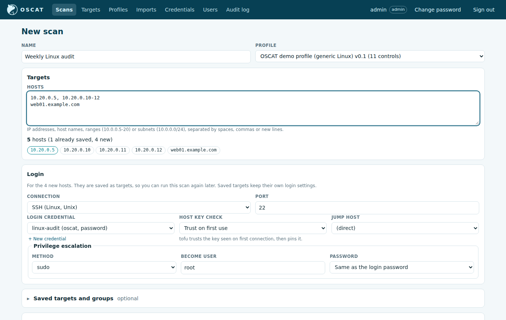
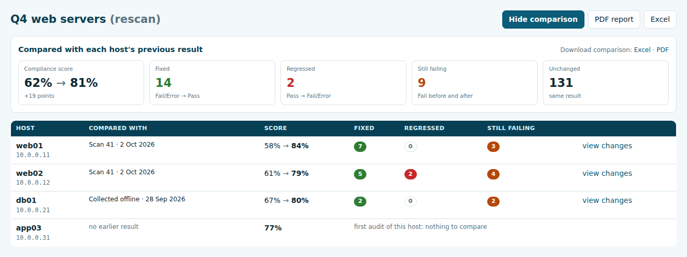
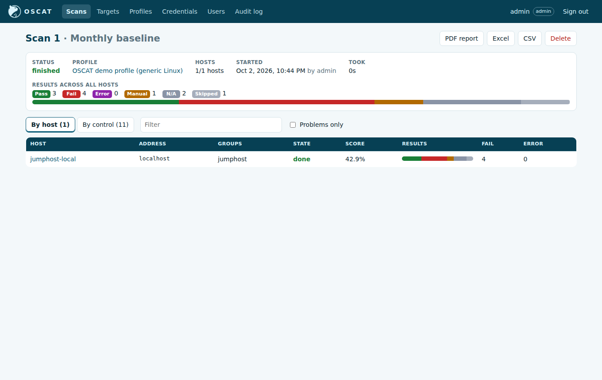
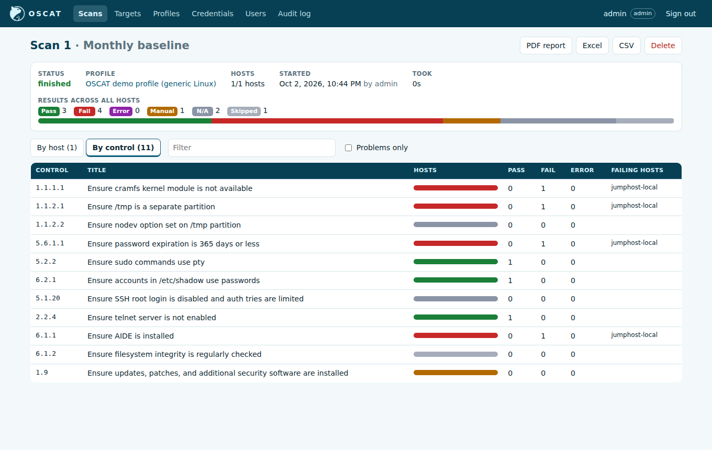
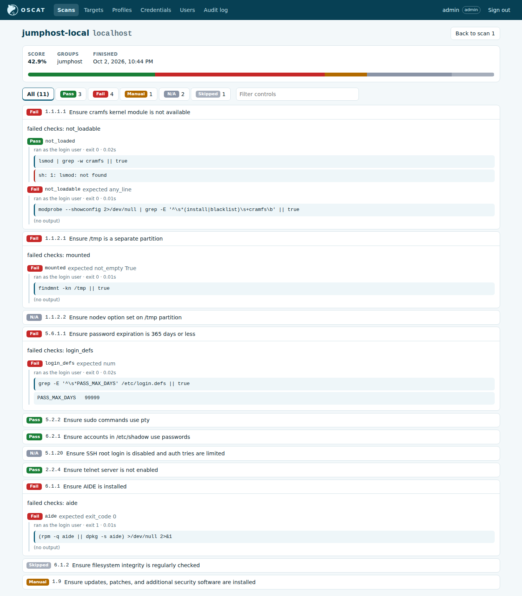

Running scans
Start a scan
On Scans → New scan:
- Give the scan a name, such as
Q4 web servers, and pick the profile (the benchmark to audit against). - Type the hosts into Hosts: IP addresses, host names, ranges such as
10.0.0.5-20or10.0.0.5-10.0.1.9, or subnets such as10.0.0.0/24. Separate them with spaces, commas or new lines. OSCAT shows how many hosts that is, and points out anything it cannot read. - Under Login, choose the login credential (and, for SSH, the privilege escalation). One login is used for every host of the scan, typed or saved, and for a group too. The connection follows the benchmark: a Windows benchmark logs in over WinRM, Linux over SSH, a network benchmark over the device CLI or the APIC REST API, a database benchmark to the database. Administrators can add a credential right there with + Add a credential…, the last entry of the credential list. Rarely needed settings, such as an SSH bastion or the Windows authentication type, are under Advanced.
- Start the scan.
The scan keeps its login only so Run again uses the same one; hosts don't store a login. Hosts you type are saved as targets, so they show up on the Targets page. A host that is already saved (typed by its name or address) is outlined in the host list.
You can also tick saved groups and targets under Saved targets and groups, together with typed hosts or instead of them. A host listed twice is scanned once. Saved targets on another platform than the benchmark's are greyed out, with the reason.
When logins are refused
A wrong password tried on many hosts can lock the account or look like a brute-force
attack to your SOC. So until one host accepts the login, OSCAT logs in to one host at a
time, and after 3 hosts in a row refuse the login it stops starting new logins for
that scan. The remaining hosts are marked not attempted, with the reason. Hosts that
can't be reached don't count. Fix the credential and run the scan again. An administrator
can change the number with the OSCAT_LOGIN_REFUSAL_LIMIT setting (0 turns it off).
Under Controls, the scan runs the whole profile by default. To run fewer, pick a saved control set from the list, or click Choose controls and tick them: by section, by searching a number or a word, or with the quick picks (Level 1, Level 2, Automated only, All, None). A control that a ticked control depends on is ticked too, with a note saying which control needs it. An auditor can keep a choice for later with Save as control set…. Controls left out show as Excluded in the results and reports.
To pick many controls at once from your own checklist, click Filter by a pasted list… and paste one control per line, straight from Excel: a number, a title, or both. When a line has a title, the title decides, so a checklist with its own numbering still matches. Choose Show these or Show all except these, then Tick all shown or Untick all shown. Lines that match nothing are listed under the box, with the closest control as a suggestion you can accept with Use it. The same box is in the offline collector and control set screens.

Scans run in the background, up to OSCAT_MAX_PARALLEL_HOSTS hosts at a time (50 by
default), with a few checks in parallel on each host. The Scans list and the scan page
show progress while it runs. You can leave the page and come back; an auditor can
Cancel scan while it runs, and an administrator can Delete a finished scan.
To scan the same hosts again, open the scan and click Rescan. It starts a new scan with the same name, profile, controls and hosts; the earlier results stay as they were. Hosts deleted from Targets since are left out, and groups pick up their current members.
Compare with a previous scan
After a rescan (or any finished scan) you can see what changed since each host was last audited. On the scan page click Compare with previous. By default every host is matched to its own most recent earlier result for the same benchmark, from any scan or offline upload, so you see what was remediated and what is still open on that host. You can instead pick one earlier scan to compare against, or turn the comparison off again.

The comparison shows the compliance score before and after, and how many controls were:
- Fixed — failed or errored before, pass now;
- Regressed — passed before, fail or error now;
- Still failing — failing both times.
Each host has its own before/after score and counts. Click view changes on a host to see every control that changed, with its result before and after and the current observation. A host with no earlier result is shown as a first audit, with nothing to compare. Controls that exist in only one benchmark version are marked New control or Removed.
Download the comparison as its own Excel workbook or PDF with the links on the summary (or with the format on the end of the scan's comparison URL). The Excel has four sheets: a cover, a dashboard, a Comparison sheet with one row per control per host, and a Details sheet with the full current results. The cover and dashboard totals are formulas over the Comparison sheet, so you can delete the Details sheet and the numbers still add up. The normal scan reports are unchanged.
Read the results
The scan page has the totals across all hosts, and two views.
By host: one row per host with its address, groups, score, a bar of results, the number of failures and errors, and links to that host's own PDF and Excel report. A host that could not be reached shows the connection error instead of results.

By control: one row per control with how many hosts passed, failed or errored, and which hosts failed. Use it to see which settings fail across the estate.

The evidence for one host
Click a host to see every control with its result. Filter by state, or type to find a
control. Open a control to see each check: the command that ran, whether it ran as the
login user or through privilege escalation, the exit code, how long it took, the output,
and what the assertion expected. For a control with several checks, the line
failed checks: ... names the checks that made it fail.

The score is the share of passed controls among those that were judged automatically (pass and fail).
Result states
| State | Meaning | What to do |
|---|---|---|
| Pass | meets the control | nothing |
| Fail | does not meet the control | remediate, or record an exception |
| Error | evidence could not be collected or judged | open the evidence: a missing command, a permission problem, or a failed sudo usually shows there |
| N/A | does not apply to this host | nothing |
| Skipped | a control it depends on did not reach the required result; the Observation names that control and its result | look at that control first |
| Manual | needs a human judgement | review the evidence and the benchmark's audit text |
| Excluded | left out of this scan on purpose | nothing; it is not counted in the score |
Re-judging without rescanning
The evidence is kept with the results, so when a profile check was wrong you can fix the profile and re-judge the saved evidence without touching the hosts again, from the command line:
oscat evaluate results.json -p fixed-profile.yaml -o results-v2.json
Hosts the jumphost cannot reach
Use the offline collector and Scans → Upload collected results. The uploaded files become a normal scan with the same views and reports.
Scanning from the command line
export OSCAT_SSH_PASSWORD=...
oscat scan -p profiles/cis-ubuntu-22.04/profile.yaml -i inventory.yaml -g web -o results.json --csv results.csv
oscat report results.json --failures
-g (group) and -H (host) can be repeated, -c limits the controls. See
Command line and the inventory format in
Credentials and targets.